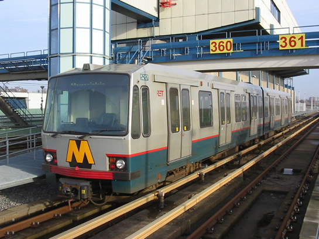
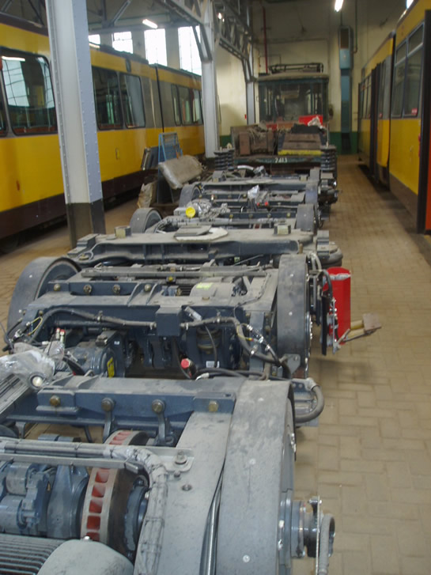
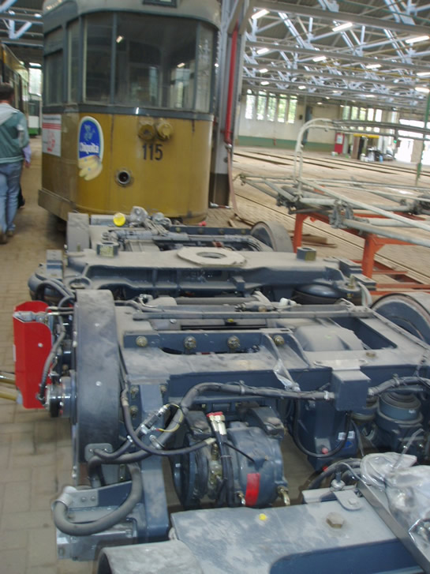
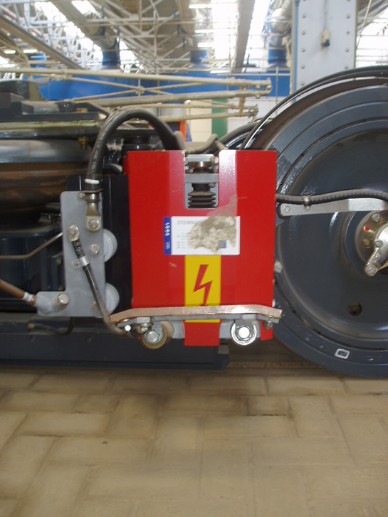

Vertragingen op Erasmuslijn en meer metronieuws...
- vrijdag 12 december 2008 17:08
- Geschreven door Joachim
Woensdag ontstonden er vertragingen op de Erasmuslijn als gevolg van storingen in wisselsecties. Dit gebeurde van aanvang dienst tot 10.00 uur 's morgens. Bij wisselcomplex Rijnhaven kwamen er op spoor 1 geen rijwegen (wat betekent dat een wissel niet veilig bereden kan worden). Hierdoor stonden diverse treinen gestrand met een nul-absoluut-afschakeling. Dit houdt in dat een metrostel actief geremd staat, en door middel van een hulprijsignaal het wisselcomplex kan berijden. Omdat dit met een lage snelheid gebeurt, stond er inmiddels een ware metrofile richting Centraal Station.
Niet alleen wisselcomplex Rijnhaven ging in storing, even later begon ook wisselcomplex Zuidplein 2 storingen te vertonen. Hier viel de rijweg op zonderlinge wijze weg in het wisselcomplex, waardoor ook hier treinen strandden met een nul-absoluut-afschakeling. De vertragingen als gevolg van de storingen waren aanzienlijk.
Rijtuig 5217
Metrostel 5217 is tot nader order uit de dienst gehaald, en zal niet op kop rijden, wanneer deze wel in dienst is. Bij het naderen van wisselcomplexen heeft het rijtuig last van ATB-storingen. Het komt dan ook frequent voor dat een volledig bewaakt wissel, dat met groene signalering bereden kan worden, door rijtuig 5217 gezien wordt als 'onveilig'. Er wordt dan onterecht een ATB-bedrijfsremming gemaakt, die niet op te heffen is door de metrobestuurder. Dit houdt de dienstregeling te veel op, daarom is besloten tot bovenstaande.

Metrosneltram 5217, vorig jaar winter op spoor 360, remise 's-Gravenweg.
Nieuw Verlaat
Gistermiddag werd op station Nieuw Verlaat de combinatie 5259-5244 stilgezet omstreeks 14.4 uur. Dit gebeurde op spoor 2. De reden hiervoor was dat er iemand onwel geworden was. RET-medewerkers, politie en een ambulance waren ter plaatse voor assistentie. Gedurende een half uur werd er enkelsporig gereden tussen wisselcomplexen Nieuw Verlaat en De Tochten.
Als gevolg van het enkelspoorbedrijf ging de AHOB-installatie van het Schout Bontebalpad in storing. Rond 15.10 kon de combinatie 5259-5244 zijn rit vervolgen richting Schiedam Centrum.
Eerste in/uitcheckpalen geplaatst
Op stations Prinsenlaan en Schenkel zijn de eerste incheckpalen geplaatst t.b.v. de OV-Chipcard, welke in februari 2005 ingevoerd moet worden in Rotterdam. Omdat een sneltramhalte niet volledig afgesloten kan worden (zoals een metrostation) is gekozen voor in- en uitcheckpalen in plaats van tourniquets.Om het zwartrijden op het sneltramtracé als nog tegen te gaan, worden er in de toekomst gerichte controles uitgevoerd.
Draaistellen type SG2/1
Diverse reserve-draaistellen van de serie 5400 (SG2/1) zijn als gevolg van ruimtegebrek overgebracht van remise Kleiweg naar tramremise Hillegersberg. Temidden van de oude trams van Stichting RoMeO staan de gloednieuwe draaistellen. Marcel Taal maakte de volgende foto's:


